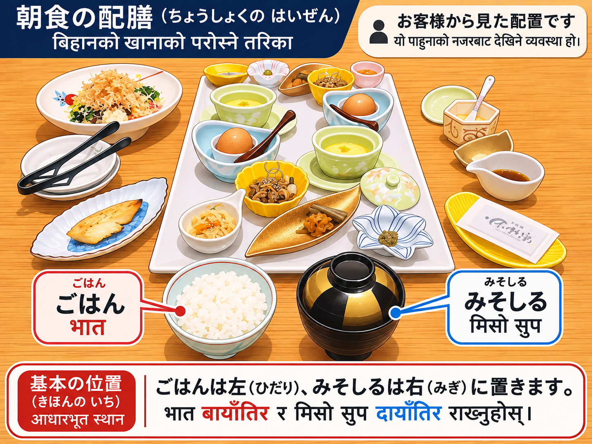
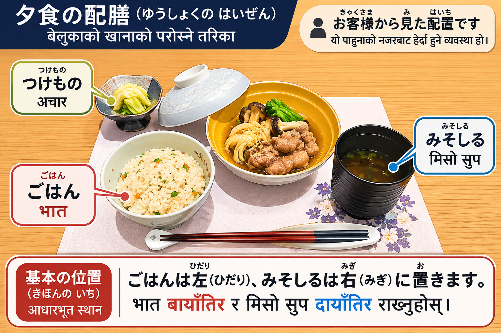

ごはんと みそしるの おきかた
भात र मिसो सुप राख्ने तरिका
① きほんの ルール
ごはんは ひだり、みそしるは みぎ भात बायाँ, मिसो सुप दायाँ
おきゃくさまから みて、ごはんは ひだり てまえ、みそしるは みぎ てまえに おきます。
पाहुनाको दृष्टिकोणबाट हेर्दा भात अगाडि बायाँ र मिसो सुप अगाडि दायाँ राख्नुहोस्।
② ちょうしょく
ちょうしょくの おきかた
ちょうしょくでは、ごはんを ひだり、みそしるを みぎに おきます。みそしるに ふたが ついていても、おく ばしょは おなじです。
बिहानको खानामा भात बायाँ र मिसो सुप दायाँ राख्नुहोस्। सुपको भाँडामा ढकनी भए पनि राख्ने ठाउँ उही हो।

③ ゆうしょく
ゆうしょくの おきかた
ゆうしょくでも、ごはんは ひだり、しるものは みぎです。つけものは、ごはんの ひだりおくが きほんです。
बेलुकाको खानामा पनि भात बायाँ र सुप दायाँ राख्नुहोस्। अचार सामान्यतया भातको पछाडि बायाँपट्टि राखिन्छ।

④ なぜ ばしょが たいせつ？
ぎゃくに おかないでください
ごはんと みそしるの ひだり・みぎを ぎゃくにすると、なくなった かたへの おそなえを れんそうさせる ことが あります。
おきゃくさまに しつれいに ならないよう、ただしい ばしょに おきましょう。
भात र मिसो सुपको बायाँ-दायाँ ठाउँ उल्टो राख्दा मृतकलाई चढाइने खानाको तरिका सम्झाउन सक्छ। त्यसैले पाहुनालाई खाना दिँदा सही ठाउँमा राख्नुहोस्।
⑤ かんさいとの ちがい
きぬがわふどうたきでは、みぎ てまえ
おおさかなど かんさいの いちぶでは、みそしるを ごはんの おくに おく しゅうかんが あります。
これは まちがいでは ありませんが、きぬがわふどうたきでは ごはんの みぎてまえに おきます。
ओसाकालगायत कान्साईका केही ठाउँमा मिसो सुप भातको पछाडि राख्ने चलन छ। यो गलत होइन, तर किनुगावा फुदोताकीमा सुप भातको दायाँ अगाडि राखिन्छ।